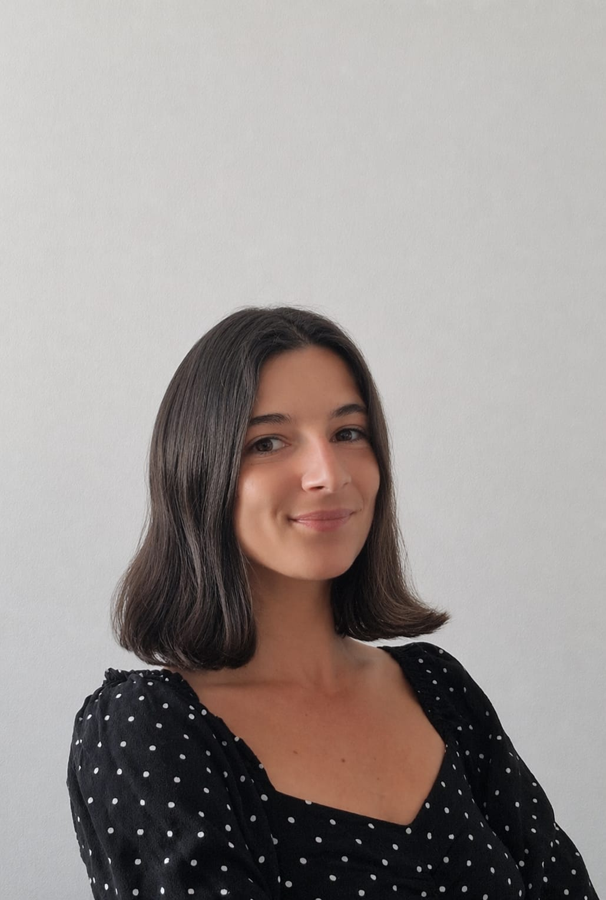

Après plusieurs années en tant qu'experte en stratégie, communication interculturelle et traduction (EN/ES>FR), j'ai choisi d'orienter mon parcours vers la protection animale.
J'ai ainsi poursuivi des formations en comportement animal, en droit des animaux et en plaidoyer européen, afin de mieux appréhender la complexité des enjeux juridiques et scientifiques liés au bien-être animal, et de les traduire en contenus et argumentaires clairs et mobilisables dans différents contextes linguistiques et professionnels.
Ce parcours m'a préparée à intervenir auprès d'acteurs aux logiques très diverses, allant des institutions aux ONG, en passant par le secteur privé et les décideurs publics, en ajustant l'approche et le positionnement en fonction des enjeux propres à chaque environnement.
La prise en compte de la sensibilité des animaux constitue, selon moi, un enjeu éthique majeur, qui doit être placé au cœur des arbitrages collectifs qui structurent nos sociétés. Je souhaite contribuer à faire évoluer les cadres juridiques, politiques et industriels afin de mieux intégrer leurs intérêts.
After several years working in strategy, intercultural communication and translation (EN/SP>FR), I decided to focus my work on animal protection.
I therefore trained in animal behaviour, animal law and European advocacy to deepen my understanding of the legal and scientific dimensions of animal welfare, and to translate these complex issues into clear materials and arguments that can be used across different languages and professional settings.
This path has prepared me to engage with a wide range of stakeholders, including institutions, NGOs, private-sector actors and public decision-makers, adapting both framing and approach depending on the context and objectives involved.
Animal sentience, in my view, is a central ethical issue that should be reflected in collective decision-making. I am committed to contributing to the development of legal, political and economic frameworks that better take animal interests into account.
Droit et bien-être animalAnimal law and welfare
Impactful EU Policy Career — BruxellesImpactful EU Policy Career — Brussels
Programme de formation aux politiques européennes d'impact pour le bien-être animalEU animal welfare policy training programme
Diplôme en Droit des AnimauxDegree in Animal Law
Université de ToulonUniversity of Toulon
ACACED — Attestation de Connaissance pour les Animaux de Compagnie d'Espèces DomestiquesACACED — Certificate of Knowledge for Domestic Companion Animals
CFPPA 89
Diplôme de comportementaliste canin et félinDiploma in Canine and Feline Behaviour
Ethologie EFM Métiers animaliersEthologie EFM Animal Professions School
Certificat de premiers secours animaux domestiquesFirst Aid Certificate for Domestic Animals
Alforme
Communication et languesCommunication and languages
Master en Communication Interculturelle et TraductionMaster's in Intercultural Communication and Translation
ISIT Paris
Diplôme d'interprétation de liaison espagnol › françaisLiaison Interpretation Diploma — Spanish › French
ISIT Paris
Diplôme de la Chambre de commerce et d'industrie franco-espagnoleFranco-Spanish Chamber of Commerce and Industry Certificate
ISIT Paris
Diplôme de la Chambre de commerce et d'industrie franco-britanniqueFranco-British Chamber of Commerce and Industry Certificate
ISIT Paris
Erasmus — Licence Communication et LanguesErasmus — BA Communication and Languages
Universidad de Granada, EspagneUniversity of Granada, Spain
Classe préparatoire littéraire — HypokhâgneHumanities Preparatory Class (Hypokhâgne)
Lycée Descartes, AntonyLycée Descartes, Antony, France
Tous ces animaux évoluent dans des conditions où leurs besoins physiologiques, comportementaux et émotionnels les plus élémentaires ne sont ni reconnus ni respectés. All these animals live in conditions where their most basic physiological, behavioural and emotional needs are neither recognised nor met.
Ces chiffres ne sont pas des statistiques. Ils représentent la plus grande échelle de souffrance évitable en cours sur la planète, et un système dont la transformation adviendra par le biais d'un mouvement coordonné : une évolution des pratiques alimentaires, scientifiques et culturelles ainsi que des représentations sociales, des solutions de transition cohérentes pour les acteurs industriels et de la recherche, et une volonté politique et réglementaire réelle à l'échelle européenne.
C'est cette conviction, que l'ampleur appelle une ambition proportionnelle, qui m'a conduite à construire un parcours à l'intersection de la communication stratégique internationale, de la traduction et du droit des animaux, complété par une formation en éthologie et en réglementation européenne du bien-être animal, et des engagements bénévoles sur le terrain.
These figures are not statistics. They represent the largest ongoing scale of preventable suffering on the planet, and a system whose transformation will come through a coordinated movement: a shift in dietary, scientific and cultural practices and social representations, coherent transition solutions for industry and research actors, and genuine political and regulatory will at the European level.
It is this conviction, that scale demands proportional ambition, that led me to build a career at the intersection of international strategic communication, translation and animal law, complemented by training in ethology and European animal welfare regulation, alongside field-based voluntary commitments.
Eurogroup for Animals. (2021, mai). Animal welfare at the time of killing and slaughter [Position Paper]. Données 2019. eurogroupforanimals.org
Commission européenne. (2026). Statistical report on the use of animals for scientific purposes in the European Union and Norway — 2023 [SWD(2026) 100 final]. circabc.europa.eu
Eurogroup for Animals. (2021, May). Animal welfare at the time of killing and slaughter [Position Paper]. 2019 data. eurogroupforanimals.org
European Commission. (2026). Statistical report on the use of animals for scientific purposes in the European Union and Norway — 2023 [SWD(2026) 100 final]. circabc.europa.eu
De la distinction domestique/sauvage à une protection unifiée de l'animal : réflexion sur l'évolution du droit français au regard des évolutions européennesFrom the Domestic/Wild Distinction to a Unified Animal Protection Framework: a reflection on the evolution of French law in light of European developments
Mémoire de recherche · Diplôme en Droit des Animaux · Université de ToulonResearch dissertation · Degree in Animal Law · University of Toulon
Objet de la rechercheResearch focus
Travail de recherche approfondi consacré à la reconnaissance juridique de l'animal et à la pertinence de la distinction entre animaux domestiques et animaux sauvages en droit français, à la lumière des évolutions scientifiques, sociétales et européennes.An in-depth research project on the legal recognition of animals and the relevance of the domestic/wild animal distinction in French law, examined through the lens of scientific, social and European developments.
ApprocheMethodology
Croisement de sources doctrinales, jurisprudentielles et normatives (droit interne, droit comparé et instruments européens), enrichi d'apports issus de l'éthologie, des neurosciences et des sciences du comportement.Cross-referencing doctrinal, jurisprudential and normative sources (domestic law, comparative law and European instruments), supplemented by ethology, neuroscience and behavioural sciences.
Application professionnelleProfessional application
Ce travail constitue aujourd'hui le socle de mes activités d'analyse, de rédaction spécialisée et de traduction technique dans le domaine de la protection animale. Il nourrit ma pratique au quotidien et me permet d'aborder des sujets complexes avec la profondeur qu'ils méritent.This research now forms the backbone of my analysis, specialist writing and technical translation work in the field of animal protection, allowing me to approach complex subjects with the depth they deserve.
Traduction et étude traductologique d'un rapport scientifique de la Commission Valencienne espagnole sur l'extinction progressive des abeilles au niveau mondial et sur les effets nocifs des insecticidesTranslation and Translatological Study of a Scientific Report by the Valencian Commission on the Global Decline of Bee Populations and the Harmful Effects of Insecticides
Mémoire de recherche · Master en Communication Interculturelle et Traduction · ISIT ParisResearch dissertation · Master's in Intercultural Communication and Translation · ISIT Paris
Objet du projetProject scope
Traduction intégrale d'un rapport scientifique de 3 700 mots publié par la Commission des Sciences de la Communauté valencienne (Espagne), consacré à la disparition progressive des populations d'abeilles. Recherche terminologique approfondie en écologie, éthologie et agronomie pour restituer des données techniques complexes tout en les rendant accessibles à un public francophone non spécialiste.Full translation of a 3,700-word scientific report published by the Valencian Community Science Commission (Spain) on the progressive decline of bee populations. Extensive terminological research in ecology, ethology and agronomy to render complex technical data accurately while making it accessible to a non-specialist French-speaking audience.
Réflexion traductologiqueTranslation theory
Réflexion sur les enjeux d'équivalence, de localisation et de transmission des savoirs scientifiques dans un contexte européen, avec une attention particulière portée à la dimension pédagogique du texte source. Traduire la science, c'est aussi la rendre compréhensible sans la dénaturer.A theoretical reflection on equivalence, localisation and the transmission of scientific knowledge in a European context, with particular attention to the pedagogical dimension of the source text. Translating science also means making it understandable without distorting it.
Développement de l'offre ZEWAY (scooters électriques en abonnement) sur la région niçoise, depuis le lancement jusqu'à la structuration commerciale locale. Prospection et acquisition de nouveaux clients B2C et B2B, gestion et fidélisation d'un portefeuille clients, négociation et mise en place de partenariats stratégiques, contribution à la notoriété de la marque et à l'implantation régionale dans le secteur de la mobilité durable urbaine.Spearheaded ZEWAY's electric scooter subscription offer across the Nice area from launch through to full commercial structure. Prospected and onboarded B2B and B2C clients, managed and grew a client portfolio, negotiated strategic partnerships and built regional brand awareness in the urban sustainable mobility sector.
Structuration de l'écosystème digital : refonte complète de l'identité de marque (unification de trois marques historiques), déploiement de la charte éditoriale et terminologique, définition du positionnement concurrentiel et création d'une identité cohérente sur l'ensemble des canaux. Pilotage de campagnes publicitaires, médias et événementielles (3 000 participants) : définition des objectifs, construction stratégique et créative, planification et coordination équipes, monitoring et analyse. Gestion stratégique et opérationnelle des réseaux sociaux (Facebook, Instagram, LinkedIn) : création de contenus visuels et rédactionnels, community management, analyse des performances. Conception et rédaction du site web (architecture, parcours utilisateur, SEO), newsletters hebdomadaires techniques (investissement, fiscalité, entrepreneuriat), guides experts de 70 pages encore utilisés comme référence métier, et contenus pédagogiques pour plateformes e-learning. Gestion de la communauté d'apprenants et d'entrepreneurs : alimentation continue en contenus sectoriels, organisation d'événements de formation interne. Conceptualisation et gestion de projets vidéo d'experts : scripts, coordination de production, gestion de tournages. Management d'un community manager et d'un chargé de communication.Digital ecosystem structuring: full rebrand merging three legacy brands, deployment of editorial and terminology guidelines, definition of competitive positioning and creation of a consistent identity across all channels. Management of advertising, media and event campaigns (3,000 participants): objective setting, strategic and creative development, team planning and coordination, monitoring and analysis. Strategic and operational management of social media (Facebook, Instagram, LinkedIn): visual and written content creation, community management, performance analysis. Website copywriting (architecture, user journey, SEO), weekly technical newsletters (investment, taxation, entrepreneurship), 70-page expert guides still used as industry references, and e-learning educational content. Management of the learner and entrepreneur community: ongoing sectoral content, internal training events. Conceptualisation and management of expert video projects: scripts, production coordination, shoot management. Management of a community manager and a communications officer.
Conception et mise en place de la politique de communication interne et externe. Rédaction de livres blancs de 60 pages sur les logiciels marketing et leur utilisation optimale, combinant vulgarisation de contenus techniques IT et positionnement produit sur les marchés français et internationaux. Définition de la ligne éditoriale, réécriture et révision des textes techniques lors de la refonte de la solution Boostmyshop. Traduction et révision de l'intégralité des contenus pour l'univers international (FR › EN), supervision de l'adaptation et localisation pour le marché global.Designed and implemented internal and external communications strategy from the ground up. Authored 60-page white papers on marketing software, combining accessible IT content with product positioning for French and international markets. Defined the editorial line and rewrote all technical copy during the platform relaunch. Translated and revised the full content suite for international markets (FR › EN), overseeing localisation for global audiences.
Création et pilotage de la stratégie de contenus et communication multicanal. Développement du blog d'entreprise et création du blogzine Parages (immobilier, habitat, logement). Recrutement et gestion de plus de 30 rédacteurs internes et externes. Production d'une série de 15 vidéos techniques (chef de projet tournages : réalisation, scripts, direction artistique, stratégie de diffusion et reportings). Pilotage du programme influence avec 3 ambassadrices et projets de campagnes d'influence. Newsletters, gestion CRM, social media management et communication de crise.Built and led a multichannel content and communications strategy. Launched the company blog and created Parages, an editorial magazine covering housing and real estate. Recruited and managed 30+ internal and freelance writers. Produced a series of 15 technical videos (project lead: filming, scripts, art direction, distribution strategy and reporting). Led an influencer programme with three brand ambassadors. Managed newsletters, CRM, social media and crisis communications.
Traduction de textes généraux (tourisme, histoire, éducation) et spécialisés (économie, informatique) en espagnol et en français. Gestion de projets de traduction, suivi des dossiers clients et des campagnes d'interprétation.Translated general texts (tourism, history, education) and specialised content (economics, IT) between Spanish and French. Managed translation projects, client accounts and interpretation assignments.
Gestion de projets de traduction dans différentes combinaisons linguistiques. Proofreading ES›FR / EN›FR, suivi des dossiers, utilisation du CRM, graphisme et logiciels traductologiques.Managed translation projects across multiple language pairs. Proofreading ES›FR / EN›FR, client file management, CRM, design software and CAT tools.
Stage au sein du département communication et marketing de cette entreprise britannique spécialisée dans les services publics numériques. Participation à la production de contenus, gestion des supports de communication et appui aux campagnes marketing.Internship within the communications and marketing department of this UK-based digital public services company. Contributed to content production, managed communications materials and supported marketing campaigns.
Traductrice et rédactrice bénévoleVolunteer translator and writer
Traductions de contenus pédagogiques et scientifiques à destination du public français (EN › FR).Translating educational and scientific content for French-speaking audiences (EN › FR).
Rédactrice web et analyste bénévoleVolunteer web writer and analyst
Conception et rédaction de contenus d'analyse approfondis sur les enjeux de captivité des animaux sauvages, combinant rigueur scientifique et accessibilité pour différents publics.Creating and writing in-depth analytical content on wild animal captivity, balancing scientific rigour with accessibility for a range of audiences.
Membre active du mouvementActive movement member
Engagement autour des problématiques contemporaines à fort impact : bien-être animal, santé globale, risques existentiels. Participation aux événements du mouvement, ateliers de réflexion stratégique et groupes de travail thématiques pour développer et promouvoir des solutions fondées sur les données probantes.Engaged on high-impact contemporary issues including animal welfare, global health and existential risks. Active participation in movement events, strategic thinking workshops and thematic working groups focused on developing and advancing evidence-based solutions.
Chargée de communication et rédaction webCommunications and web writing volunteer
Prise en charge de la communication digitale de l'association au service du placement d'animaux abandonnés. Rédaction, mise en scène et diffusion des annonces d'adoption visant à maximiser le taux de placement, en valorisant chaque animal de manière individualisée. Gestion des demandes et suivi des dossiers d'adoption.Managing the association's digital communications in support of animal adoption. Writing, staging and publishing adoption listings designed to maximise placement rates by showcasing each animal individually. Managing adoption enquiries and following up on applications.
Soigneuse bénévoleWildlife care volunteer
Participation aux soins des animaux sauvages recueillis, entretien des cages et enclos.Caring for rescued wildlife, maintaining enclosures and supporting daily operations.
Comportementaliste bénévoleVolunteer animal behaviourist
Suivi comportemental des chiens, socialisation et éducation, stimulations cognitives.Behavioural monitoring, socialisation, training and cognitive enrichment for shelter dogs.